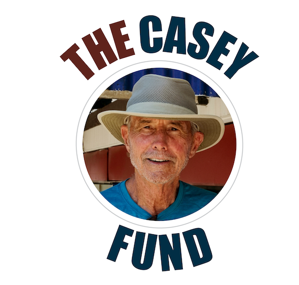

Bruce “Casey” Stengel was a valued member of the Boquete community and a friend of Parque Biblioteca Boquete. He was a kind and gentle person who valued the nature and tranquillity of Boquete. He loved the park, its beauty, and the sense of community it represents.
Following Casey’s tragic death, his friends established a memorial fund in his honor. Contributions to the Casey Fund will be dedicated to Parque Biblioteca Boquete, creating a lasting tribute to Casey in a place that meant so much to him.